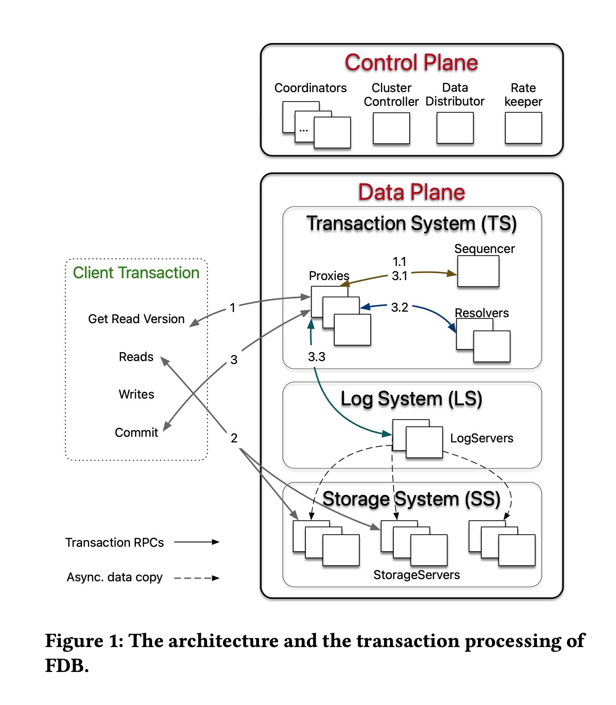
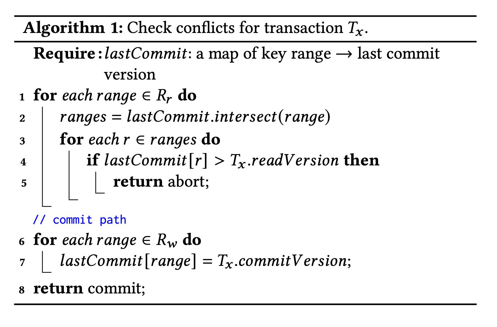
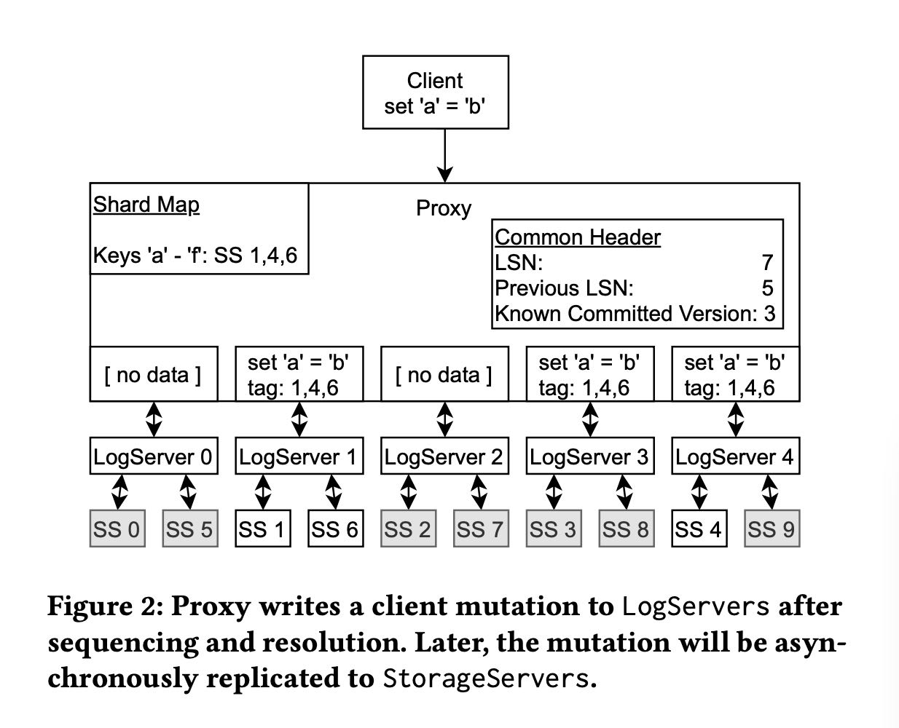
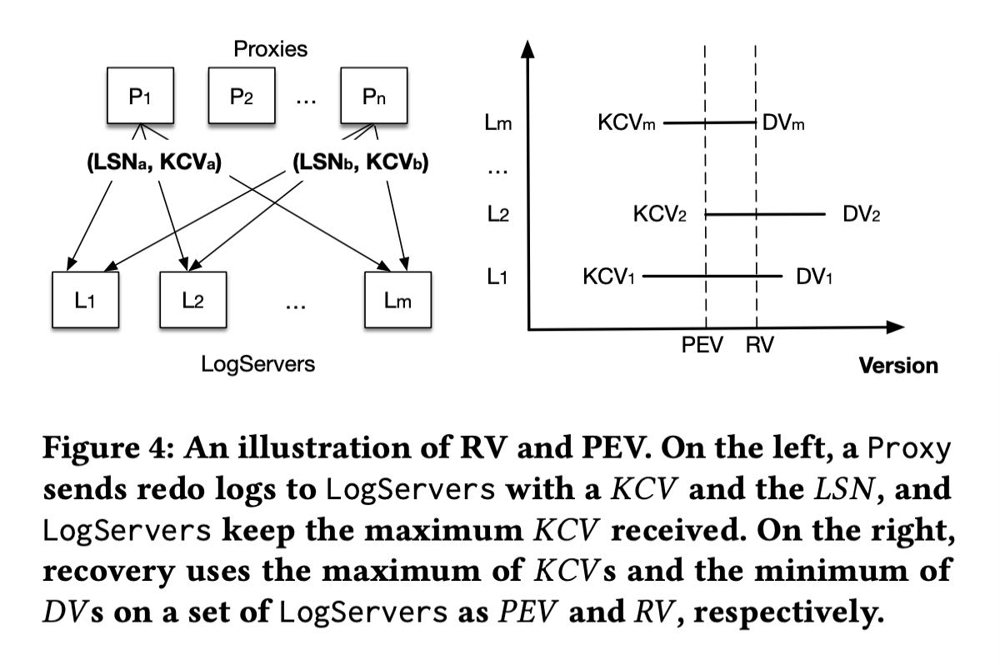
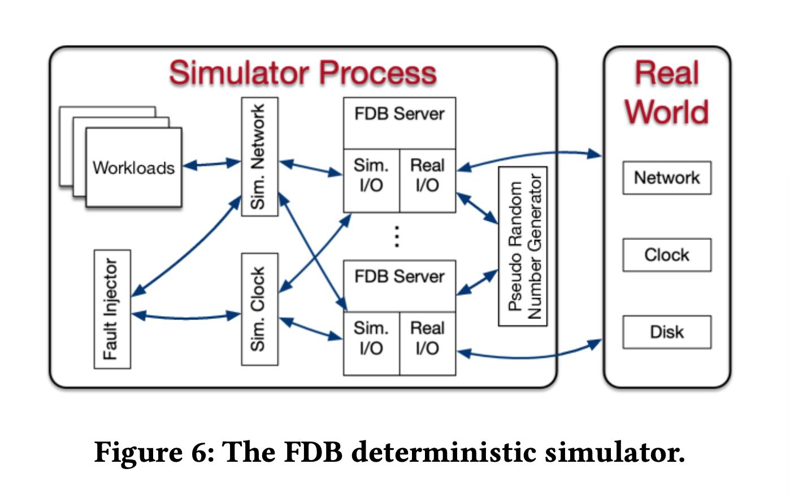

FoundationDB: A Distributed Unbundled Transactional Key Value Store
Table of Contents
https://www.foundationdb.org/files/fdb-paper.pdf
1. abstract
fdb有这么几个特点：
- ACID kv/nosql 支持事务的KV数据库
- unbundled database. 数据库的多个组件是进程之间隔离的
- simutation testing. 可以进行确定性的模拟测试
- 另外就是在事务实现上比较有特点，事务时间最长是5s
2. introduction
fdb目标是给分布式系统提供可用的服务，所以在设计上可能比较简单，就是支持事务的KV存储系统。
FoundationDB (FDB) [5] was created in 2009 and gets its name from the focus on providing what we saw as the foundational set of building blocks required to build higher-level distributed systems. It is an ordered, transactional, key-value store natively supporting multi-key strictly serializable transactions across its entire key- space. Unlike most databases, which bundle together a storage engine, data model, and query language, forcing users to choose all three or none, FDB takes a modular approach: it provides a highly scalable, transactional storage engine with a minimal yet carefully chosen set of features. It provides no structured semantics, no query language, data model or schema management, secondary indices or many other features one normally finds in a transactional database. Offering these would benefit some applications but others that do not require them (or do so in a slightly different form) would need to work around. Instead, the NoSQL model leaves application develop- ers with great flexibility. While FDB defaults to strictly serializable transactions, it allows relaxing these semantics for applications that don’t require them with flexible, fine-grained controls over conflicts.
许多分布式数据库可以将fdb用于lower half, 然后自己完成上面的upper half.
One of the reasons for its popularity and growing open source community is FoundationDB’s focus on the “lower half” of a data- base, leaving the rest to its “layers”—stateless applications devel- oped on top to provide various data models and other capabilities. With this, applications that would traditionally require completely different types of storage systems, can instead all leverage FDB. Indeed, the wide range of layers that have been built on FDB in recent years are evidence to the usefulness of this unusual design. For example, the FoundationDB Record Layer [28] adds back much of what users expect from a relational database, and JanusGraph [9], a graph database, provides an implementation as a FoundationDB layer [8]. In its newest release, CouchDB [2] (arguably the first NoSQL system) is being re-built as a layer on top of FoundationDB.
fdb自带的simutation testing framework可以使用确定性的模拟回放来发现许多bugs, 并且创建回归cases. 这个东西没有办法测试性能，但是测试正确性应该很有用。
Testing and debugging distributed systems is at least as hard as building them. Unexpected process and network failures, mes- sage reorderings, and other sources of non-determinism can expose subtle bugs and implicit assumptions that break in reality, which are extremely difficult to reproduce or debug. The consequences of such subtle bugs are especially severe for database systems, which purport to offer perfect fidelity to an unambiguous contract. More- over, the stateful nature of a database system means that any such bug can result in subtle data corruption that may not be discovered for months. Model checking techniques can verify the correctness of distributed protocols, but often fall short of checking the ac- tual implementation. Deep bugs [46], which only happen when multiple crashes or restarts occur in a particular sequence, pose a challenge even for end-to-end testing infrastructure. The develop- ment of FDB took a radical approach—before building the database itself, we built a deterministic database simulation framework that can simulate a network of interacting processes and a variety of disk, process, network, and request-level failures and recoveries, all within a single physical process. This rigorous testing in simulation makes FDB extremely stable, and allows its developers to introduce new features and releases in a rapid cadence. This is unusual not only for distributed databases, but even for centralized systems.
fdb是unbundled架构，每个组件都是独立的进程存在。比如control plane使用active disk paxos来做到高可用（后面说他们最开始时使用ZK的），使用OCC/MVCC来实现事务一致性，好多组件其实不是quorum来实现的，而是完全基于最上面的control plane来做的，所以可以做到f+1 replicas满足f failures. cross region高可用性实现好像也比较中规中矩。
FDB adopts an unbundled architecture [50] that comprises a con- trol plane and a data plane. The control plane manages the metadata of the cluster and uses Active Disk Paxos [27] for high availability. The data plane consists of a transaction management system, re- sponsible for processing updates, and a distributed storage layer serving reads; both can be independently scaled out. FDB achieves strict serializability through a combination of optimistic concur- rency control (OCC) [44] and multi-version concurrency control (MVCC) [18]. Besides a lock-free architecture, one of the features distinguishing FDB from other distributed databases is its approach to handling failures. Unlike most similar systems, FDB does not rely on quorums to mask failures, but rather tries to eagerly detect and recover from them by reconfiguring the system. This allows us to achieve the same level of fault tolerance with significantly fewer resources: FDB can tolerate 𝑓 failures with only 𝑓 + 1 (rather than 2𝑓 + 1) replicas. This approach is best suited for deployments in a local or metro area. For WAN deployments, FDB offers a novel strategy that avoids cross-region write latencies while providing automatic failover between regions without losing data.
3. design
3.1. principles
设计原则如下：
- divide-and-conque 这个还是unbundled做法，就是把组件拆分成为多个进程，这样之间不会相互影响，可以独立部署和恢复。
- failure as common case 将错误常态化，这样的话可以只测试恢复路径，并且尽可能地将恢复时间减少，后面说到了这样升级的话可以一起升级。
- fail fast and recover fast. 这个上面提到了，对于分布式系统failure应该是很常见的，包括升级系统，所以也减少恢复时间。
- simulation testing. 可以用很少的代价来发现deep bugs.
Divide-and-Conquer (or separation of concerns). FDB decou- ples the transaction management system (write path) from the distributed storage (read path) and scales them inde- pendently. Within the transaction management system, pro- cesses are assigned various roles representing different as- pects of transaction management, including timestamp man- agement, accepting commits, conflict detection, and logging. Furthermore, cluster-wide orchestrating tasks, such as over- load control, load balancing, and failure recovery are also divided and serviced by additional heterogeneous roles.
Make failure a common case. For distributed systems, failure is a norm rather than an exception. In the transaction man- agement system of FDB, we handle all failures through the recovery path: instead of fixing all possible failure scenar- ios, the transaction system proactively shuts down when it detects a failure. As a result, all failure handling is reduced to a single recovery operation, which becomes a common and well-tested code path. Such error handling strategy is desirable as long as the recovery is quick, and pays dividends by simplifying the normal transaction processing.
Fail fast and recover fast. To improve availability, FDB strives to minimize Mean-Time-To-Recovery (MTTR), which in- cludes the time to detect a failure, proactively shut down the transaction management system, and recover. In our produc- tion clusters, the total time is usually less than five seconds (see Section 5.3).
Simulation testing. FDB relies on a randomized, deterministic simulation framework for testing the correctness of its dis- tributed database. Because simulation tests are both efficient and repeatable, they not only expose deep bugs [46], but also boost developer productivity and the code quality of FDB.
3.2. APIs
API比较简单，就是get/set/getRange/clearRange. 最后就是commit. key/value size(10KB/100KB)以及事务大小(10MB)有限制，因为一个事务是一次性发送的，所以不可能太大。
FDB exposes operations to read and modify single keys as well as ranges of keys. The get() and set() operations read and write a single key-value pair, respectively. For ranges, 𝑔𝑒𝑡𝑅𝑎𝑛𝑔𝑒() returns a sorted list of keys and their values within the given range; and 𝑐𝑙𝑒𝑎𝑟 () deletes all keys-value pairs whithin a range or starting with a certain key prefix.
An FDB transaction observes and modifies a snapshot of the database at a certain version and changes are applied to the under- lying database only when the transaction commits. A transaction’s writes (i.e., set() and clear() calls) are buffered by the FDB client until the final commit() call, and read-your-write semantics are preserved by combining results from database look-ups with uncommitted writes of the transaction. Key and value sizes are limited to 10 KB and 100 KB respectively for better performance. Transaction size is limited to 10 MB, including the size of all written keys and values as well as the size of all keys in read or write conflict ranges that are explicitly specified.
3.3. archtecture
下面这个是架构图，可以看到分为control plane/data plane.
Control Plane:
- Coordinators 之间使用Active Disk Paxos组成高可用组，上面还会存储某些配置文件比如log servers/storeage servers等等。
- Coordinators 会选出一个Cluster Controller.会监控所有的机器并且选择下面3个角色：Sequencer, DataDistributor, RateKeeper
- 其中上面Sequencer已经进入到了Data Plane层面了，它会继续选择出一组Proxies, Resolvers, LogServers.
- 我的理解是如果Proxies/Resolvers/LogServers出现down的话，那么Sequencer就会直接退出，开始重启流程。
- Sequencer主要目的就是来分配read/commit version.
- Proxies 用来告诉Client应该去哪里读取数据，以及帮助检查和提交事务的
- Resolvers 用来检查事务是否可以提交
- LogServers 用来存储事务log. 这些log最终会被SS异步拉取到本地进行回放。
- SS. 这个就是最终的存储服务器，从LS上拉取日志下来进行回放，LS和SS之间的对应关系应该是确定的。LS/SS各自会维护一定的key range.

Control Plane The control plane is responsible for persist- ing critical system metadata, i.e., the configuration of transac- tion systems, on Coordinators. These Coordinators form a disk Paxos group [27] and select a singleton ClusterController. The ClusterController monitors all servers in the cluster and re- cruits three singleton processes, Sequencer, DataDistributor, and Ratekeeper, which are re-recruited if they fail or crash. The Sequencer assigns read and commit versions to transactions. The DataDistributor is responsible for monitoring failures and balanc- ing data among StorageServers. Ratekeeper provides overload protection for the cluster.
DataPlane FDB targets OLTP workloads that are read-mostly, read and write a small set of keys, have low contention, and re- quire scalability. FDB chooses an unbundled architecture [50]: a dis- tributed transaction management system (TS) performs in-memory transaction processing, a log system (LS) stores Write-Ahead-Log (WAL) for TS, and a separate distributed storage system (SS) is used for storing data and servicing reads. The TS provides transaction processing and consists of a Sequencer, Proxies, and Resolvers, all of which are stateless processes. The LS contains a set of Log- Servers and the SS has a number of StorageServers. This scales well to Apple’s largest transactional workloads [28].
The Sequencer assigns a read version and a commit version to each transaction and, for historical reasons, also recruits Proxies, Resolvers, and LogServers. Proxies offer MVCC read versions to clients and orchestrate transaction commits. Resolvers check for conflicts between transactions. LogServers act as replicated, sharded, distributed persistent queues, where each queue stores WAL data for a StorageServer.
The SS consists of a number of StorageServers for serving client reads, where each StorageServer stores a set of data shards, i.e., contiguous key ranges. StorageServers are the majority of processes in the system, and together they form a distributed B-tree. Currently, the storage engine on each StorageServer is a modified version of SQLite [41], with enhancements that make range clears faster, defer deletion to a background task, and add support for asynchronous programming.
文章提到了启动和reconfiguration部分，其实非常类似。和我上面想的一样，sequencer会监控启动的proxiers, resolvers和LSs, 如果失效的话那么sequencer会退出触发重新启动流程
Reconfiguration Whenever there is a failure in the TS or LS, or a database configuration change, a reconfiguration process brings the transaction management system to a new configuration, i.e., a clean state. Specifically, the Sequencer process monitors the health of Proxies, Resolvers, and LogServers. If any one of the monitored processes fails or the database configuration changes, the Sequencer process terminates. The ClusterController will detect the Sequencer failure event, then recruit a new Sequencer, which follows the above bootstrapping process to spawn the new TS and LS instance. In this way, transaction processing is divided into epochs, where each epoch represents a generation of the transaction management system with its unique Sequencer process.
4. txn management
4.1. process
txn流程其实在上面那个架构图就有了
End-to-end Transaction Processing As illustrated in Figure 1, a client transaction starts by contacting one of the Proxies to obtain a read version (i.e., a timestamp). The Proxy then asks the Se- quencer for a read version that is guaranteed to be no less than any previously issued transaction commit version, and this read version is sent back to the client. Then the client may issue multiple reads to StorageServers and obtain values at that specific read version. Client writes are buffered locally without contacting the cluster. At commit time, the client sends the transaction data, including the read and write sets (i.e., key ranges), to one of the Proxies and waits for a commit or abort response from the Proxy. If the transaction cannot commit, the client may choose to restart the transaction from the beginning again.
A Proxy commits a client transaction in three steps. First, the Proxy contacts the Sequencer to obtain a commit version that is larger than any existing read versions or commit versions. The Sequencer chooses the commit version by advancing it at a rate of one million versions per second. Then, the Proxy sends the transac- tion information to range-partitioned Resolvers, which implement FDB’s optimistic concurrency control by checking for read-write conflicts. If all Resolvers return with no conflict, the transaction can proceed to the final commit stage. Otherwise, the Proxy marks the transaction as aborted. Finally, committed transactions are sent to a set of LogServers for persistence. A transaction is consid- ered committed after all designated LogServers have replied to the Proxy, which reports the committed version to the Sequencer (to ensure that later transactions’ read versions are after this commit) and then replies to the client. At the same time, StorageServers continuously pull mutation logs from LogServers and apply com- mitted updates to disks.
4.2. check conflict
在提交的时候，从sequencer上面会拿到txn id(LSN), 以及 previous LSN(论文上说确保之前不存在gap). 这个我没有太明白是什么意思。在txn data里面，每个read range都是都一个read version的，这个会在resolvers那边进行检查. resolvers那边会维护一个last commit跳表实现，里面内容是ranger->commit version的映射。然后我们会检查每个read range是否都大于这个commit version, 否则就会认为读取到的是不一致的数据而直接abort txn.
FDB implements Serializable Snapshot Isolation (SSI) by combining OCC with MVCC. Recall that a transaction 𝑇𝑥 gets both its read version and commit version from Sequencer, where the read version is guaranteed to be no less than any committed version when 𝑇𝑥 starts and the commit version is larger than any existing read or commit versions. This commit version defines a serial history for transactions and serves as Log Sequence Number (LSN). Because 𝑇𝑥 observes the results of all previous committed transactions, FDB achieves strict serializability. To ensure there is no gaps between LSNs, the Sequencer returns the previous commit version (i.e., previous LSN) with commit version. A Proxy sends both LSN and previous LSN to Resolvers and Log- Servers so that they can serially process transactions in the order of LSNs. Similarly, StorageServers pull log data from LogServers in increasing LSNs as well.
Algorithm 1 illustrates the lock-free conflict detection algorithm on Resolvers. Specifically, each Resolver maintains a history 𝑙𝑎𝑠𝑡𝐶𝑜𝑚𝑚𝑖𝑡 of recently modified key ranges by committed trans- actions, and their corresponding commit versions. The commit request for 𝑇𝑥 comprises two sets: a set of modified key ranges 𝑅𝑤 , and a set of read key ranges 𝑅𝑟 , where a single key is converted to a single key range. The read set is checked against the modi- fied key ranges of concurrent committed transactions (line 1—5), which prevents phantom reads. If there are no read-write conflicts, Resolvers admit the transaction for commit and update the list of modified key ranges with the write set (line 6—7). For snapshot reads, they are not included in the set 𝑅𝑟 . In practice, 𝑙𝑎𝑠𝑡𝐶𝑜𝑚𝑚𝑖𝑡 is represented as a version-augmented probabilistic SkipList [56].

这里面proxy还需要将txn分派到不同的resolvers上面去检查，按照key range进行划分。所以这里会出现一些问题就是，某些resolve认为OK，但是另外一些认为不OK的话，就会出现某些resolver认为commit成功，range上更新了最新的commit version. 会导致某些false positive的cases. 但是论文认为这个没有关系，因为所有的txn 5s就会过期，client可以重启发起读取。还有就是实际中大部分只有一个resolver在检查冲突。
The entire key space is divided among Resolvers so that the above read-write conflict detection algorithm may be performed in parallel. A transaction can commit only when all Resolvers admit the transaction. Otherwise, the transaction is aborted. It is possible that an aborted transaction is admitted by a subset of Resolvers, and they have already updated their history of 𝑙𝑎𝑠𝑡𝐶𝑜𝑚𝑚𝑖𝑡, which may cause other transactions to conflict (i.e., a false positive). In practice, this has not been an issue for our production workloads, because transactions’ key ranges usually fall into one Resolver. Additionally, because the modified keys expire after the MVCC window, the false positives are limited to only happen within the short MVCC window time (i.e., 5 seconds). Finally, the key ranges of Resolvers are dynamically adjusted to balance their loads.
The OCC design of FDB avoids the complicated logic of acquiring and releasing (logical) locks, which greatly simplifies interactions between the TS and the SS. The price paid for this simplification is to keep the recent commit history in Resolvers. Another draw- back is not guaranteeing that transactions will commit, a challenge for OCC. Because of the nature of our multi-tenant production workload, the transaction conflict rate is very low (less than 1%) and OCC works well. If a conflict happens, the client can simply restart the transaction.
4.3. commit
如果事务检查通过的话，那么proxy就开始往LS上进行提交，同样是按照key ranges来做提交。提交完成之后会更新自己的 `know committed version` 到最新的LSN上，维护这个KCV主要是为了故障恢复使用的。提交到LS之后，那么就可以认为commit path完成了，接着就是SS去拉取LS. 这个延迟通常在4ms左右，最大延迟在208ms. 如果用户读取不到最新数据，可以等待也可以更换ss replica.

After a Proxy decides to commit a transac- tion, the log message is broadcast to all LogServers. As illustrated in Figure 2, the Proxy first consults its in-memory shard map to determine the StorageServers responsible for the modified key range. Then the Proxy attaches StorageServer tags 1, 4, and 6 to the mutation, where each tag has a preferred LogServer for storage. In this example, tags 1 and 6 have the same preferred LogServer. Note the mutation is only sent to the preferred LogServers (1 and 4) and an additional LogServer 3 to meet the replication re- quirements. All other LogServers receive an empty message body. The log message header includes both LSN and the previous LSN obtained from the Sequencer, as well as the known committed version (KCV) of this Proxy. LogServers reply to the Proxy once the log data is made durable, and the Proxy updates its KCV to the LSN if all replica LogServers have replied and this LSN is larger than the current KCV.
Shipping the redo log from the LS to the SS is not a part of the commit path and is performed in the background. In FDB, StorageServers aggressively fetch redo logs from LogServers before they are durable on the LS, allowing very low latency for serving multi-version reads. Figure 3 shows the time lag between StorageServers and LogServers in one of our production clusters for a 12-hour period, where the 99.9 percentile of the average and maximum delay is 3.96 ms and 208.6 ms, respectively. Because this lag is small, when client read requests reach StorageServers, the requested version (i.e., the latest committed data) is usually already available. If due to a small delay the data is not available to read at a StorageServer replica, the client either waits for the data to become available or issues a second request to another replica [32]. If both reads timed out, the client gets a retryable error to restart the transaction.
Because the log data is already durable on LogServers, Storage- Servers can buffer updates in memory and only persist batches of data to disks with a longer delay, thus improving I/O efficiency by coalescing the updates. Aggressively pulling redo logs from LogServers means that semi-committed updates, i.e., operations in transactions that are aborted during recovery (e.g., due to Log- Server failure), need to be rolled back (see Section 2.4.4).
4.4. recovery
恢复过程比较轻量，Sequencer会重新选择出一组log servers出来，这里有好几个概念：**（有点看的半懂不懂的感觉）**
- DV(Durable Version). 这个表示每个LS节点上看到的最大LSN. 表示在LS上存储到的最新数据到哪里了。
- RV(recovery version). RV则是所有LS group上 DV的最小值， 可以认为所有LS节点上有都有至少到RV这个版本的数据。
- PEV(previous epoch version). 这个是所有LS group的KCV最大值，可以认为PEV之前都已经完全commit了。
- 那么从 `[PEV+1, RV]` 之间的数据需要从old log servers到new log servers.
- 然后SS丢弃RV之后的数据，从PEV之后的数据开始进行回放. 我理解对KV系统的话，重复回放几次是没有什么问题的。所以没有太明白为什么需要丢弃RV之后的数据
he essence of the recovery of old LogServers is to determine the end of redo log, i.e., a Recovery Version (RV). Rolling back undo log is essentially discarding any data after RV in the old LogServers and StorageServers. Figure 4 illustrates how RV is determined by the Sequencer. Recall that a Proxy request to LogServers piggy- backs its KCV, the maximum LSN that this Proxy has committed. Each LogServer keeps the maximum KCV received and a Durable Version (DV), which is the maximum persisted LSN. During a recov- ery, the Sequencer attempts to stop all 𝑚 old LogServers, where each response contains the DV and KCV on that LogServer. As- sume the replication degree for LogServers is 𝑘. Once the Se- quencer has received more than 𝑚 − 𝑘 replies 1, the Sequencer knows the previous epoch has committed transactions up to the maximum of all KCVs, which becomes the previous epoch’s end version (PEV). All data before this version has been fully replicated. For current epoch, its start version is 𝑃𝐸𝑉 + 1 and the Sequencer chooses the minimum of all DVs to be the RV. Logs in the range of [𝑃𝐸𝑉 + 1,𝑅𝑉] are copied from previous epoch’s LogServers to the current ones, for healing the replication degree in case of LogServer failures. The overhead of copying this range is very small because it only contains a few seconds’ log data.
When Sequencer accepts new transactions, the first is a spe- cial recovery transaction that informs StorageServers the RV so that they can roll back any data larger than RV. The current FDB storage engine consists of an unversioned SQLite [41] B-tree and in-memory multi-versioned redo log data. Only mutations leaving the MVCC window (i.e., committed data) are written to SQLite. The rollback is simply discarding in-memory multi-versioned data in StorageServers. Then StorageServers pull any data larger than version 𝑃𝐸𝑉 from new LogServers.

5. simulation testing
这个东西不得了，应该就是FDB的秘密武器了，使用这个框架可以以较小的成本来模拟发现分布式系统中时序问题。
代码结构上，将IO部分已经拆分成为了sim io和real io. 这样可以从workloads里面来给sim io输入。另外就是这个实现框架，是一个C++的actor模型，基于事件响应来实现的，所以可能可以更容易地进行注入和模拟。
Testing and debugging distributed systems is a challenging and inefficient process. This problem is particularly acute for FDB, which offers a very strong concurrency control contract, any fail- ure of which can produce almost arbitrary corruption in systems layered on top. Accordingly, an ambitious approach to end-to-end testing was adopted from the beginning of FDB ’s development: the real database software is run, together with randomized synthetic workloads and fault injection, in a deterministic discrete-event sim- ulation. The harsh simulated environment quickly provokes bugs (including but not limited to distributed systems bugs) in the data- base, and determinism guarantees that every bug found this way can be reproduced, diagnosed, and fixed.

Deterministic simulator. FDB was built from the ground up to make this testing approach possible. All database code is determin- istic; accordingly multithreaded concurrency is avoided (instead, one database node is deployed per core). Figure 6 illustrates the simulator process of FDB, where all sources of nondeterminism and communication are abstracted, including network, disk, time, and pseudo random number generator. FDB is written in Flow [4], a novel syntactic extension to C++ adding async/await-like concur- rency primitives. Flow provides the Actor programming model [13] that abstracts various actions of the FDB server process into a number of actors that are scheduled by the Flow runtime library. The simulator process is able to spawn multiple FDB servers that communicate with each other through a simulated network in a single discrete-event simulation. The production implementation is a simple shim to the relevant system calls.
The simulator runs multiple workloads (also written in Flow) that communicate with simulated FDB servers through the simulated network. These workloads include fault injection instructions, mock applications, database configuration changes, and direct internal database functionality invocations. Workloads are composable to exercise various features and are reused to construct comprehensive test cases.
Fault injection 可以在合适的地方注入错误, 这里注入错误不仅限于外界IO部分，还可以在某些返回值的地方直接返回错误，就是下面说的"buggification". swarm testing可以使用不同随机参数来生成cluster size, configuration, 返回错误位置等等。为了检查模拟对于某些分支的效果，还可以看有多少次跑到了某些分支上。挺了不起的。
Fault injection. The FDB simulator injects machine, rack, and data-center level fail-stop failures and reboots, a variety of network faults, partitions, and latency problems, disk behavior (e.g. the corruption of unsynchronized writes when machines reboot), and randomizes event times. This variety of fault injection both tests the database’s resilience to specific faults and increases the diversity of states in simulation. Fault injection distributions are carefully tuned to avoid driving the system into a small state-space caused by an excessive fault rate.
FDB itself cooperates with the simulation in making rare states and events more common, through a high-level fault injection tech- nique informally referred to as “buggification”. At many places in its code-base, the simulation is given the opportunity to inject some unusual (but not contract-breaking) behavior such as unnecessarily returning an error from an operation that usually succeeds, inject- ing a delay in an operation that is usually fast, choosing an unusual value for a tuning parameter, etc. This complements fault injection at the network and hardware level. Randomization of tuning pa- rameters also ensures that specific performance tuning values do not accidentally become necessary for correctness.
Swarm testing [40] is extensively used to maximize the diversity of simulation runs. Each run uses a random cluster size and con- figuration, random workloads, random fault injection parameters, random tuning parameters, and enables and disables a different random subset of buggification points. We have open-sourced the swarm testing framework for FDB [7].
Conditional coverage macros are used to evaluate and tune the effectiveness of the simulation. For example, a developer concerned that a new piece of code may rarely be invoked with a full buffer can add the line TEST( buffer.is_full() ); and analysis of simulation results will tell them how many distinct simulation runs achieved that condition. If the number is too low, or zero, they can add buggification, workload, or fault injection functionality to ensure that scenario is adequately tested.
运行这些测试如果不是CPU操作的话，那么可能可以很快，因为可以将时钟直接前拨而不用真正进行等待。这个真的非常有用，时间越短意味着可以运行更大规模的随机测试。
Latency to bug discovery. Finding bugs quickly is important both so that they are encountered in testing before production, and for engineering productivity (since bugs found immediately in an individual commit can be trivially traced to that commit). Discrete-event simulation can run arbitrarily faster than real-time if CPU utilization within the simulation is low, as the simulator can fast-forward clock to the next event. Many distributed systems bugs take time to play out, and running simulations with long stretches of low utilization allows many more of these to be found per core second than in “real-world” end-to-end tests.
Additionally, bugs can be found faster simply by running more simulations in parallel. Randomized testing is embarrassingly par- allel and FDB developers can and do “burst” the amount of testing they do immediately before major releases, in the hopes of catching exceptionally rare bugs that have thus far eluded the testing process. Since the search space is effectively infinite, simply running more tests results in more code being covered and more potential bugs being found, in contrast to scripted functional or system testing.
6. 5s MVCC Window
FDB chooses a 5-second MVCC window to limit the memory usage of the transaction system and storage servers, because the multi- version data is stored in the memory of Resolvers and Storage- Servers, which in turn restricts transaction sizes. From our experi- ence, this 5s window is long enough for the majority of OLTP use cases. If a transaction exceeds the time limit, it is often the case that the client application is doing something inefficient, e.g., issuing reads one by one instead of parallel reads. As a result, exceeding the time limit often exposes inefficiency in the application.
For some transactions that may span more than 5s, many can be divided into smaller transactions. For instance, the continuous backup process of FDB will scan through the key space and create snapshots of key ranges. Because of the 5s limit, the scanning process is divided into a number of smaller ranges so that each range can be performed within 5s. In fact, this is a common pattern: one transaction creates a number of jobs and each job can be further divided or executed in a transaction. FDB has implemented such a pattern in an abstraction called TaskBucket and the backup system heavily depends on it.